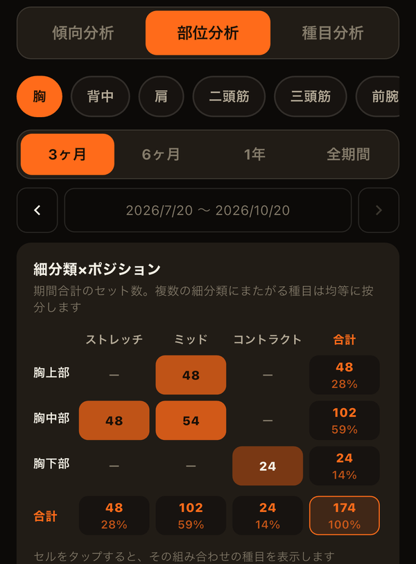

胸を鍛える種目といっても、ベンチプレス、ダンベルフライ、ケーブルクロスオーバーでは、きつくなる場面が違います。フライは腕を広げて胸が伸びきった位置が最もきつく、ケーブルクロスオーバーは両手を寄せきった位置が最もきつい。この「負荷が最大になる位置」に注目して種目を分けるのが、POF法（Position of Flexion）と呼ばれる考え方です。
3つのポジション
- ストレッチ：筋肉が伸びた位置で負荷が最大になる種目。
- ミッド：可動域の中間で負荷が最大になる種目。複数の関節を使うプレス系・スクワット系など、高重量を扱いやすい種目の多くがここに入ります。
- コントラクト：筋肉が縮んだ位置で負荷が最大になる種目。ケーブルやマシンで、動作の終わりまで張力が抜けにくい種目が多く含まれます。
部位ごとの種目例
- 胸：ミッド＝ベンチプレス／ストレッチ＝ダンベルフライ／コントラクト＝ケーブルクロスオーバー、ペックフライ
- 二頭筋：ストレッチ＝インクラインダンベルカール／コントラクト＝ケーブルカール
- 三頭筋：ストレッチ＝オーバーヘッドトライセプスエクステンション／コントラクト＝トライセプスプッシュダウン
- 肩：ミッド＝ショルダープレス／コントラクト＝サイドレイズ、リアレイズ
- ハムストリング：ストレッチ＝ルーマニアンデッドリフト／コントラクト＝レッグカール
- 大腿四頭筋：ミッド＝スクワット／ストレッチ＝ブルガリアンスクワット／コントラクト＝レッグエクステンション
ただし、分類はあくまで目安です。ケーブルの角度やベンチの傾き、フォームによって、同じ種目名でも負荷がかかる位置は変わります。人によって分類が分かれる種目もあるので、自分の感覚に合わせて考えて構いません。
なぜポジションを意識するのか
ミッドの種目だけを続けていると、可動域の端、特に筋肉が伸びきった位置や縮みきった位置での刺激が少なくなりがちです。3つのポジションを組み合わせると、可動域全体にまんべんなく負荷をかけられます。
近年は、筋肉が伸びた位置で負荷をかけるトレーニングが筋肥大に有利かもしれない、という研究報告も増えています。たとえば三頭筋では、腕を頭上に上げて行うエクステンションの方が、腕を下ろした姿勢で行うものより筋肉が大きく発達したという報告があります。ただし研究はまだ発展途上で、ミッドやコントラクトの種目が不要という意味ではありません。重量を伸ばしやすいミッドを軸にしつつ、ストレッチ・コントラクトで補う、という組み合わせが現実的です。
偏りの見直し方
- 部位ごとに、最近やっている種目をポジション別に分けてみる
- セット数がどこかに偏っていないかを見る（例：胸はプレス系ばかりでミッドに集中している）
- 少ないポジションの種目を1つ入れ替える・足す（例：ベンチプレスの後にダンベルフライを2〜3セット）
一度に大きく変える必要はありません。数週間続けて、重量や部位のサイズの変化と合わせて振り返るのがおすすめです。
LiFTYでは、種目ごとにポジション（ストレッチ／ミッド／コントラクト）を設定できます。最初から入っている種目には、一般的な目安のポジションが設定済みです。分析タブの「部位分析」では、細分類（胸上部・長頭など）×ポジションの表で、どこにセット数が偏っているかを確認できます（分析タブの使い方）。

関連記事
LiFTYは、種目に設定したポジションと細分類をもとに、部位ごとのセット数の内訳を表で表示します。鍛え方の偏りに、記録から気づけます。アカウント作成なしで、今すぐ試せます。
App Storeでダウンロード